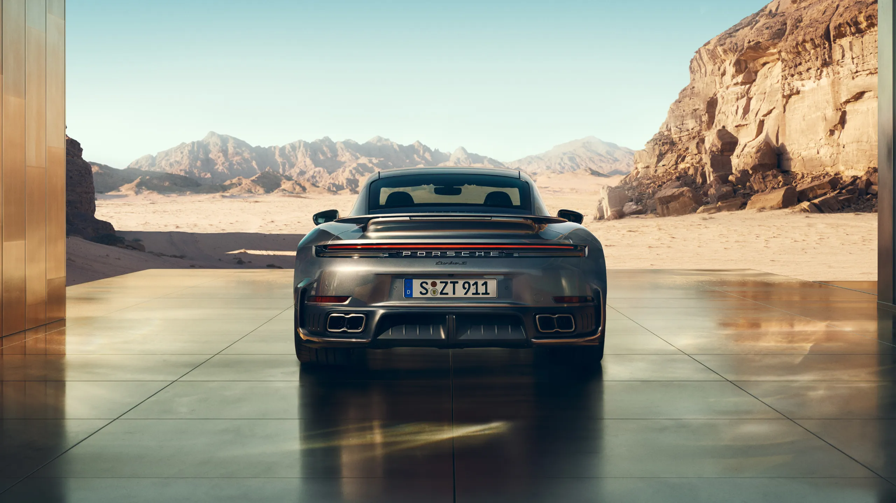
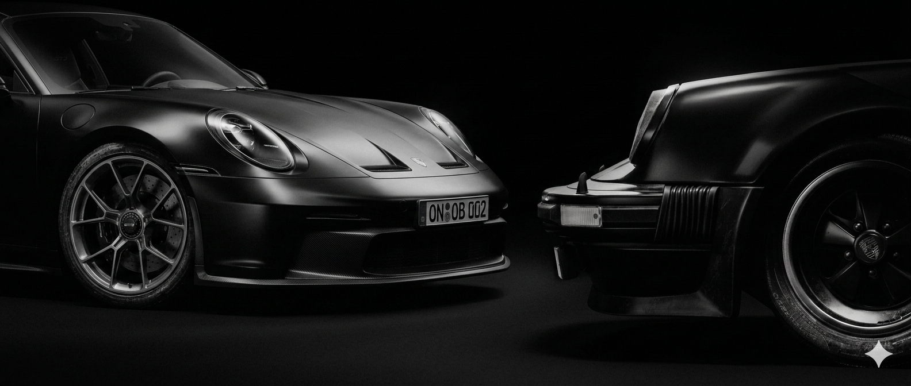
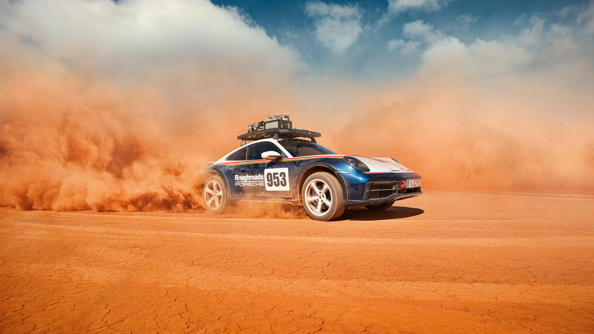
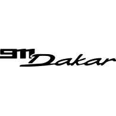
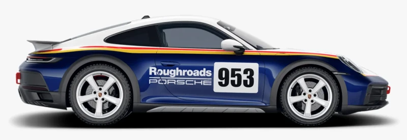

Engenharia alemã em sua forma mais pura.
Um equilíbrio entre performance extrema e design atemporal.
Mais de seis décadas evoluindo um dos esportivos mais icônicos da história.
Entre passado e presente.
Décadas se passaram entre esses dois modelos, mas algo permaneceu intacto. A silhueta. A essência. A sensação de que a 911 nunca foi criada apenas para ser rápida, mas para ser reconhecida instantaneamente.
De um lado, a herança que transformou a Porsche em um ícone. Do outro, a evolução da engenharia moderna, onde potência, precisão e aerodinâmica trabalham em perfeita harmonia.



A 911 Dakar é uma das versões mais diferentes já feitas da 911.
Enquanto outras 911 nasceram para rasgar pistas, a Dakar foi criada para areia, terra e estrada ruim. Sim, alguém na Porsche olhou pra um esportivo baixo e caro e pensou: “e se ela pulasse dunas?”. Felizmente deixaram essa pessoa continuar trabalhando.
Inspirada nas vitórias da Porsche no Rally Dakar dos anos 1980.
- Mais confortável
- Aguenta pisos ruins com facilidade
- Tem ótima estabilidade em terra
- Mantém a sensação esportiva típica da Porsche
Ela não busca o melhor tempo de volta em circuito. Busca diversão em qualquer lugar.
- Para-lamas mais robustos
- Gancho de reboque aparente
- Asa traseira fixa
- Barras e adesivos inspirados em rally
- Altura muito maior que outras 911
- Bancos esportivos
- Acabamentos em couro e Race-Tex
- Painel digital moderno
- Espaço focado no motorista
Ela parece um carro de corrida que cansou do asfalto e decidiu viajar sem avisar ninguém.

- 480 HP
- 0-100 EM 3.4S
- 240 KM/H
- BOXER 3.0 BITURBO
- AWD